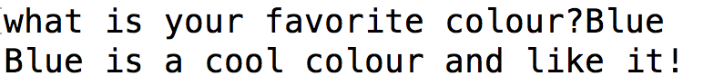

You can use readline.js to callback input values from users. Here is the syntax:
rl.question("what is favourite your colour?", (answer)
The prompt is prepended with a query and invokes a callback with the user's response. It displays the query to the user, and then invokes callback with the user's response after it has been typed and entered.
console.log(answer, " is a cool color and I like it!");
The output looks something like.
